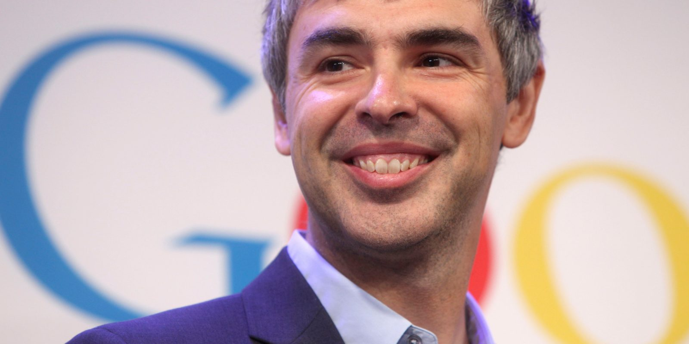

Larry Page
American business magnate, Computer Scientist, Internet entrepreneur

March 26, 1973 - Present
If you're changing the world, you're working on important things. You're excited to get up in the morning.
You never lose a dream. It just incubates as a hobby.
Always deliver more than expected.
Timeline:
- 1973, March 26 - Carl Victor Page and Gloria Page give birth to Lawrence Edward Page in East Lansing, Michigan
- 1979 - First attracted to computers at the age of six by playing around with the computers his mother and father left.
- 1970s-80s - Became the first student in his elementary school to turn in an assignment using a word processor
- 1970s-1980s - His older brother, Carl Victor Page Jr., taught Page how to disassemble and assemble parts
- 1975-1979 - Page attended Okemos Montessori School from ages 2-7
- 1985 - Page realized that he wanted to start a company
- 1991 - Page attended and graduated from East Lansing High School
- 1995 - Page a Bachelor of Science in computer engineering from the University of Michigan
- 1995, September 5 - Larry Page takes a doctorate program at Stanford University and meets Sergey Brin
- 1995 - Larry Page graduates from Stanford University with honors and a Master of Science in computer science
- 1996, January 1 - Becomes co-founder along with Brin to create the search engine, BackRub
- 1997, January 1 - Page and Brin changes the name, BackRub, to Google
- 2004, April 1 - Gmail launches
- 2005, February 8 - Google Maps launches
- 2005, August - Page buys Android for $50 million
- 2006, November 13 - Youtube is bought by Google
- 2007, December 31 - Page marries Lucy Southworth
- 2001-2011 - President of products at Google
- 2013, September - Page was ranked #13 richest person in the world
- 2015, October 2 - Page becomes CEO of Alphabet INC
- December 3, 2019 - Alphabet announces that Page and Brin are stepping down as CEO and president, respectively. The co-founders will continue to serve on Alphabet’s board of directors
Facts:
- American computer scientist and entrepreneur
- His father was a professor of computer science at Michigan State University
- From the comfort of his own dorm room, Page and Brin came up with a new type of search engine
- Page and Brin raised about $1 million in outside financing from investors, family, and friends
- The name, Google, comes from misspelling the word, googol
- The next year Google was created, the company gained $25 million of venture capital funding (Investors) and was processing 500,000 queries per day
- Page stepped down as CEO in 2001 to become president of products.
- As of April 10, 2021, Page has a net worth of approximately $103.7 billion, making him the 6th-wealthiest person in the world.